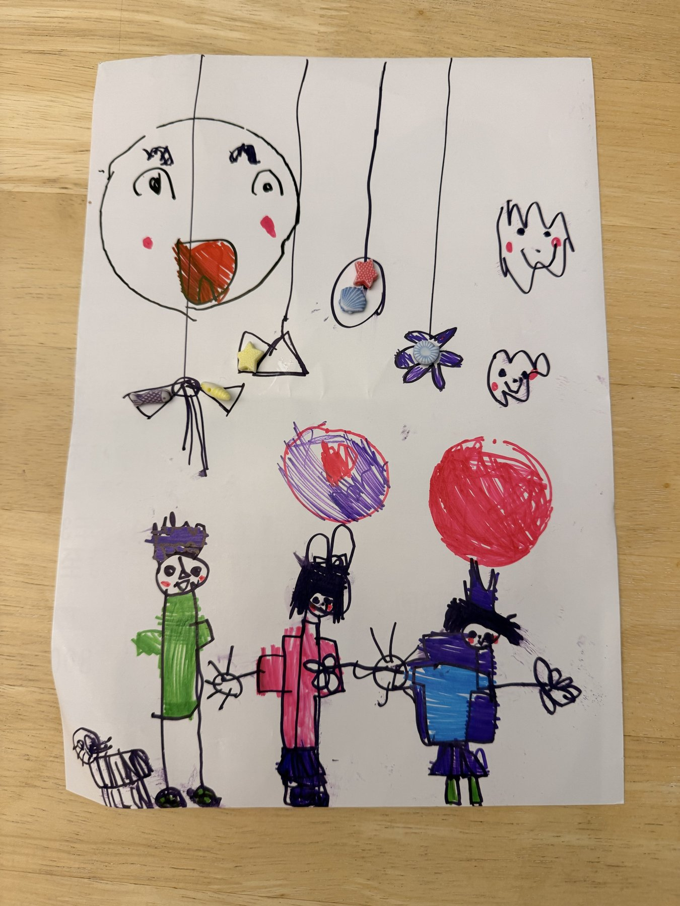
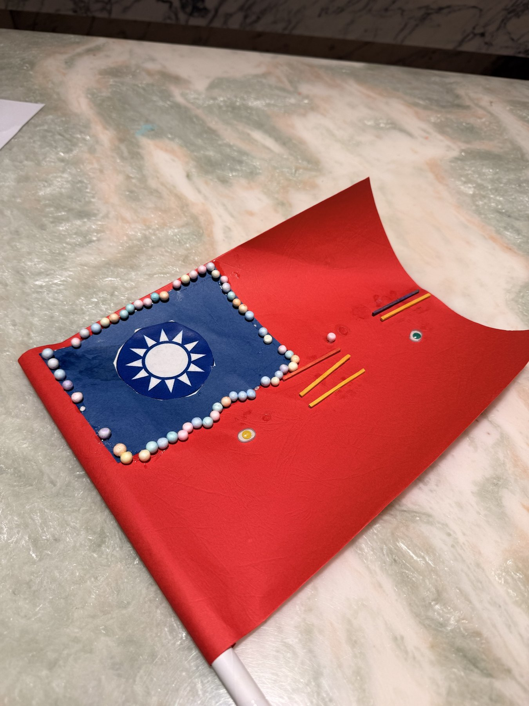

9:41
冰箱美術館
照片只在這支手機上整理，不會上傳

氣球派對小米 · 5 歲

我的國旗小米 · 勞作
下一張掛這裡
今天還能收 3 張
畫作
勞作
相簿
小技巧
首頁 · 冰箱門
9:41
美術館
畫作
勞作
重拍
拍的
整理後
左右拖曳黃色把手，比較前後
紙張變白
90
裁切
調整
筆刷
說明牌
＋ 收進這次
存到手機
整理畫面
9:41
已掛上冰箱！
「氣球派對」是小米的第 12 件作品
也存進了手機相簿
再拍一張
去冰箱看看 →
成功時刻 · 已掛上冰箱